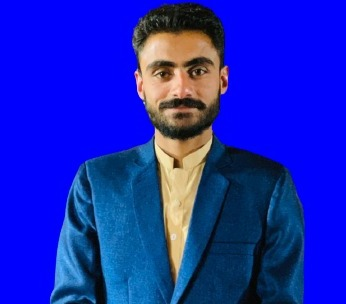

Ahmad Khan

Summary
Recent graduate with a passion for web development. Eager to leverage my
technical skills and problem-solving abilities to contribute to a
collaborative team environment.
Education
-
Bachelor of Science, Software Engineering-University of Azad Jammu &
Kashmir(2019-2023)
-
FSc. Pre-Engineering, Prime College of Science and Commerce
Chinari(2017-2019)
- Science, Govt. High School Battangi(2015-2017)
Work Experience
- Front-end Developer
Sep 2022-Feb 2023
-
Developed responsive and user-friendly interfaces using HTML, CSS,
JavaScript, and WordPress, optimizing performance and usability across
different devices and browsers.
-
Contributed to the development of a new software product from
inception to launch, actively participating in brainstorming sessions,
prototyping, and user testing phases.
-
Adapted quickly to the fast-paced and dynamic startup environment,
demonstrating flexibility and resilience in handling evolving project
requirements and deadlines.
- Medical Billing Company
Feb-2024-Present
-
Responsible for accurately processing medical claims and invoices for
reimbursement from insurance companies, Medicare, and Medicaid,
adhering to industry regulations and guidelines.
-
Reviewed patient medical records and encounter forms to ensure proper
coding of diagnoses, procedures, and services rendered, utilizing
ICD-10, CPT, and HCPCS code sets.
-
Submitted electronic claims and paper claims using billing software
and clearinghouses, monitoring claim status and following up on
denials and rejections to resolve billing discrepancies.
Skills
- Front-end development: HTML, CSS, JS, Bootstrap ⭐️⭐️⭐️⭐️
- Programming: C#, C++, Java, Python ⭐️⭐️⭐️⭐️
- MS Office: Excel, Word, Powerpoint ⭐️⭐️⭐️⭐️⭐️
- Git & GitHub ⭐️⭐️⭐️⭐️
Certificates
- Introduction to Front-end, JavaScript at Coursera by Meta
- Web Development Fundamentals-Sololearn
- Python Crash Course at Coursera by Google
Other